Pharmacometric (PMx) research usually involves computationally intensive modeling and simulation processes. High performance computing (HPC) systems provided by Minnesota Supercomputing Institute (MSI) serves as a valuable platform to perform PMx research. This blog post illustrates a strategy for constructing a collaborative, reproducible and manageable PMx workflow at MSI, leveraging several open-source tools in R.
Acknowledgement
I’d like to thank Mutaz Jaber for several valuable discussions on this topic. I’d like to thank open-source tools developed by MetrumRG and A2-AI.
Example workflow
The project workflow (project-abc) illustrated in this blog was publicly available on University of Minnesota’s Github Enterprise.
1. Connect to VPN
MSI can only be accessed when
You are connected to eduroam network on campus.
You are off campus but connecting to the University’s Virtual Private Network (VPN). Please make sure when selecting a channel for connection, do NOT select the channel named “UMN - Departmental Pools”.
2. Access R at MSI
Several ways are available to access R on MSI. This blog post uses Open OnDemand as the portal for the purpose of illustration.
Following the access to Open Ondemand, choose Rstudio Server under Interactive Apps tab. Then specify the settings for the Rstudio Server session.
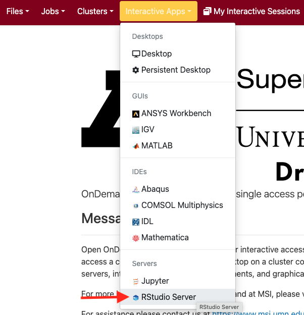
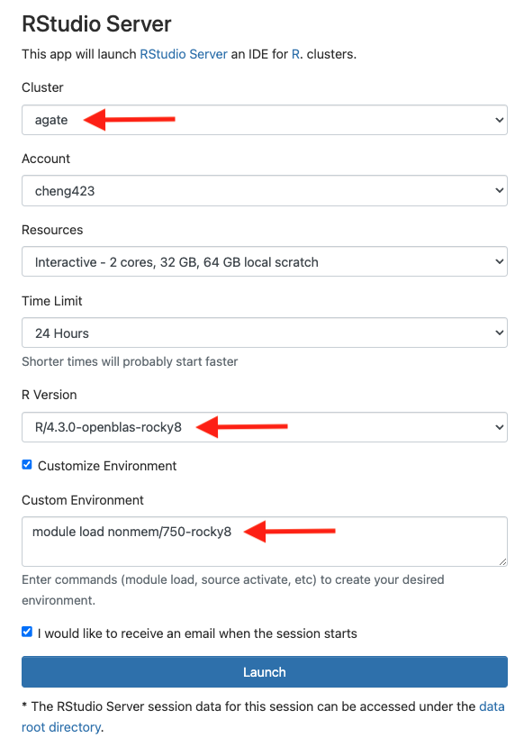
Please note:
As the retirement of mesabi in June 2024, agate is currently the primary HPC at MSI for running NONMEM.
Several R versions are available, keeping a consistent R version among collaborators would better ensure the reproducibility of the project.
NONMEM was installed at MSI HPC agate as a module. In “Custom Environment”, typing in module load nonmem/750-rocky8 will load the NONMEM module in HPC agate
Rstudio session will start in a few seconds / minutes (depends on your Rstudio Server settings) after clicking the “Launch” button.
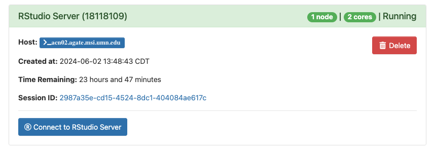
3. Build a project directory
We’d like to introduce two ways to build a project directory:
Step 1: Navigate to template project workflow (project-abc). Click Use this template, and then create a project directory with an appropriate owner and user-defined project name.
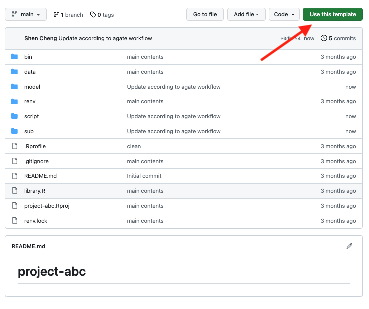
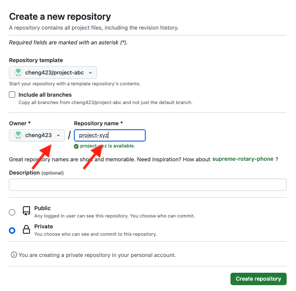
Step 2:git clone the repository into MSI Rstudio server. To do this:
Copy the string for repository cloning as indicated in the screenshot (if ssh has been configured for your account, use SSH option, otherwise, use HTTPS option).
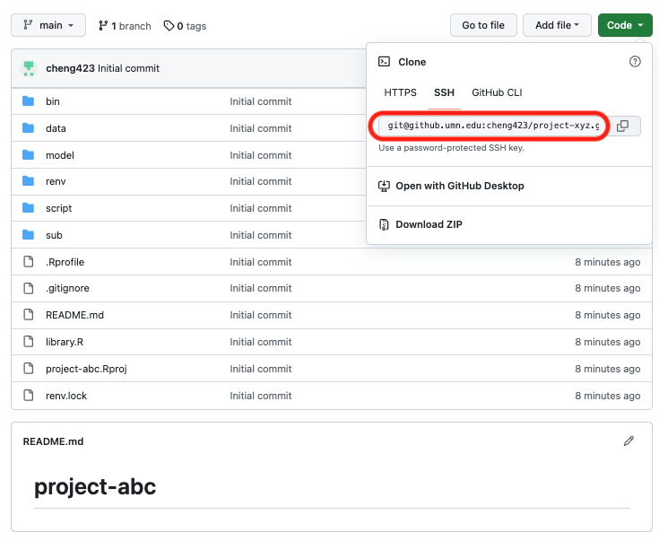
Go back to your workflow, navigate to the desired directory in the terminal.
Clone the repository using the copied string (e.g., git clone git@github.umn.edu:cheng423/project-xyz.git) in the terminal. An output similar to what is shown below indicates the repository has been cloned successfully.
Step 3: navigate inside the newly cloned github repository, then rename the .Rproj file to make it consistent with the repository name. After renaming, open the .Rproj file. This will restart your R session and initialize the desired R project.
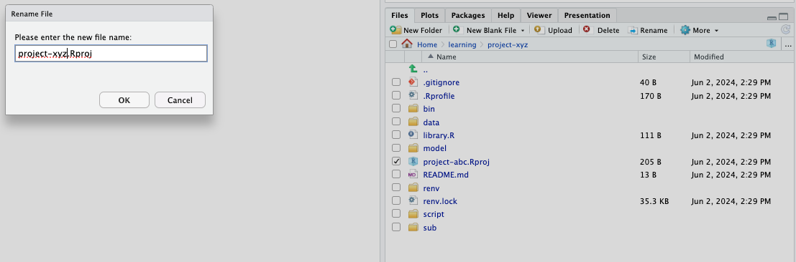
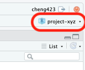
Step 4: install R packages. The R packages in the template project is managed by renv. Run renv::restore() in the R console to restore all the package installations according to renv.lock. The package installation might take a few minutes to finish.
You can directly jump to section 4. Run NONMEM using bbi to explore how to operate NONMEM at MSI following this step.
3.2 Build a project directory from scratch
3.2.1. Build a Github repository
Github is a useful tool for collaborative coding, facilitating both code review and management. University of Minnesota provides complimentary access to GitHub Enterprise for all students and employees possessing an active Internet ID. Establishing a GitHub repository can significantly improve the efficiency and collaborative experience of a PMx project. While this blog post will not provide a detailed GitHub tutorial, those interested in a comprehensive exploration of its capabilities are encouraged to consult this document for further information. Briefly,
Step 1: Registering / signing in University of Minnesota GitHub Enterprise. Initialize a new GitHub repository (i.e, project-abc) by clicking “New repository” tab. Then, specify the settings (e.g., name, visibility, etc) and create the repository.
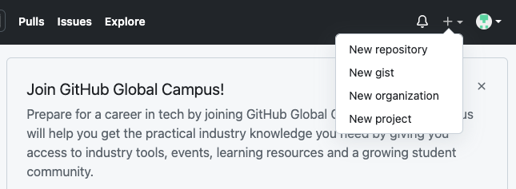
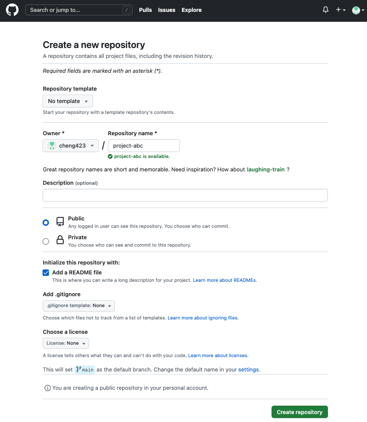
Step 2: If you have already set up your GitHubSSH key. Clone the repository into your MSI Rstudio Server session through “terminal” using the SSH option as shown below. Other options such as HTTPS and GITHUB CLI are also available but will not be covered in this blog.
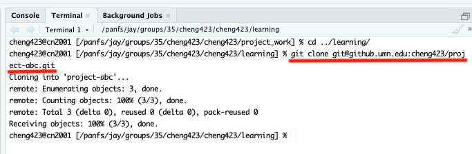
Step 3: After git clone, the GitHub repository you created should appear in your MSI disk. You can now interact with your GitHub repository and replies on it to synchronize your work with your collaborators.
3.2.2. Using renv for package version control
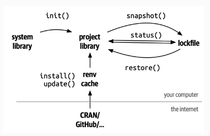
renv is a useful package to create reproducible environment for each R project. Instead of using library of R packages installed globally for every project. renv allows you to create project specific library to ensure the package version consistent across the duration of an R project.
Step 1: Create an R project
To use renv, You need to create an R project (.Rproj) in the cloned GitHub repository.
Step 2: Initialize renv
In your R console, type in renv::init() to initialize the structure of the R environment using renv.
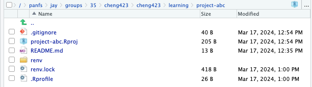
The structure of the environment includes:
.Rprofile: R session automatically runs this script every time you open this R project (i.e., project-abc.Rproj), this ensures the automatic activation of renv.
renv/library: the project specific R package library.
renv.lock: a record of R packages installed, including all the dependencies.
Step 3: Install packages
Using renv, we can install R packages using renv::install(). For example:
renv::install("mrgsolve") will install mrgsolve package from CRAN
renv::install("metrumresearchgroup/bbr") will install latest bbr package from GitHub of metrumresearchgroup
Here, I want to install 5 packages into my project folder:
When asked whether you want to proceed, simply answer Y (yes) to proceed to the next step. The installation might take a while depending on the size of the packages, whether these packages were cached and the configuration of the Rstudio session. When the installation finishes, you should see all the requested packages installed in the renv/library directory.
Step 4: Create a snapshot of the installed packages
renv::snapshot() allows you to create a snapshot of the installed packages, which enables your collaborators to use renv::restore() to restore the same R packages with the same version from the same source in their Rstudio Server session This would ensure the project reproducibility.
To accomplish this, we need to first create a new R script library.R in the project directory. This script does nothing but simply library all the packages installed.
Subsequently, we can run renv::snapshot() in the R console. This will update the renv.lock file in the project folder.
Using GitHub to synchronize your renv.lock file with your collaborators, they should now be able to install the same version of packages in their Rstudio Server session using renv::restore() according to the updated renv.lock. Similarly, if they update renv.lock on their end, you could also run renv::restore() to restore their installation.
4. Run NONMEM using bbi
Currently, NONMEM is the primary PMx model development tool at MSI. While PsN is available at MSI to communicate with NONMEM for the execution of model fitting, for this blog post, I’d like to introduce bbi developed by MetrumRG as a tool to interact with NONMEM. Using bbi makes the PMx modeling result post-processing much easier using bbr and other open-source tools developed by MetrumRG.
Let’s take a model (106.mod) from MetrumRG expo1-nonmem-foce as an example. The original analysis data and model were transferred into our project folder (./data/analysis3.csv and ./model/106.mod). The $DATA block in ./model/106.mod was modified accordingly.
Step 1: bbi installation
It is preferable that bbi is installed once every project by setting bbi.bbi_exe_path in .Rprofile. This can be done by adding the following code in .Rprofile:
Subsequently, restart R session to change the bbr.bbi_exe_path specified in .Rprofile. bbi can be installed via bbr::use_bbi() in R console according to the bbr.bbi_exe_path. The successful installation of bbi can be verified by running bbr::bbi_version() in R console. If bbi has been installed correctly, it should return a specific version number as shown below.
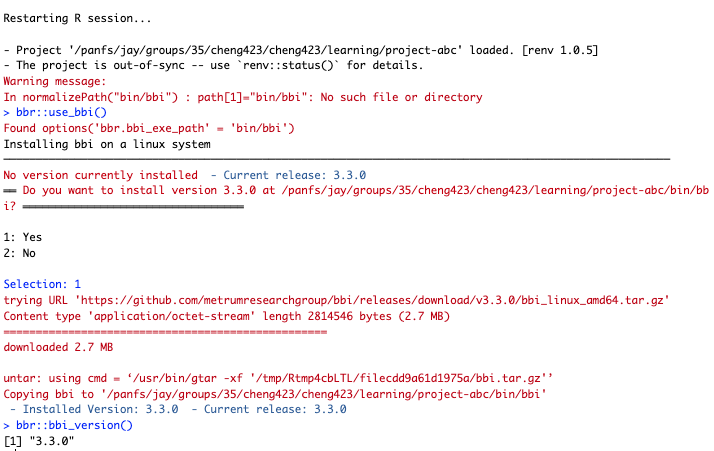
Step 2: Create a bbi configuration file
To submit a NONMEM model, you would also need a bbi configuration file (bbi.yaml), which specified the path and version of NONMEM, along with the path of the Message Passing Interface (MPI) for parallel computing. This can be done using the following code in R:
```{r}# NONMEM model directory MODEL_DIR <-here("model") # NONMEM installation directory at MSI NONMEM_DIR <-Sys.getenv("NM_ROOT") # NONMEM version NONMEM_VERSION <-"750"# MPI installation directory at MSI MPI_PATH <-Sys.getenv("NM_MPIEXEC") # Create `bbi` cinfiguration file in `MODEL_DIR`bbi_init(.dir = MODEL_DIR,.nonmem_dir = NONMEM_DIR, .nonmem_version = NONMEM_VERSION, .bbi_args =list("mpi_exec_path"= MPI_PATH))```
This will add a bbi.yaml file (i.e., bbi configuration file) in the MODEL_DIR.
Step 3: Submit NONMEM model using bbi
MSI uses slurm as the queuing system for job submission and scheduling, which makes the NONMEM model submission using bbr::submit_model() become impossible. There are two alternative strategies to submit NONMEM models at MSI using bbi.
Method 1 Submit in terminal using a bash script. An example bash script (./model/nm_run.sh) is shown below.
Many of the commands used in this bash script are detailed in the MSI. Below, we’ve provided explanations for a few selected commands that are not covered extensively in the MSI documentation:
#SBATCH -L nonmem@slurmdb:1 specifies a NONMEM license. Currently, two NONMEM licenses are available at MSI, you can specify either #SBATCH -L nonmem@slurmdb:1 or #SBATCH -L nonmem@slurmdb:2.
#SBATCH -p msismall specifies partition of the job. Please refer to this sheet to appropriately select the partition that fits your job.
module load nonmem/750-rocky8 loads the NONMEM program module at MSI HPC agate.
/panfs/jay/groups/35/cheng423/cheng423/learning/project-abc/bin/bbi specifies the executable path of bbi.
/panfs/jay/groups/35/cheng423/cheng423/learning/project-abc/model/bbi.yaml specifies the bbi configuration file.
With this bash script, navigate (cd) inside the MODEL_DIR in terminal, NONMEM model fitting can then be submitted at MSI using command sbatch nm_run.sh 106, where 106 substitutes the $1 in the bash script. After submission, you can use squeue --me in terminal to check run status.
Method 2 Create a bash script from a template (./script/slurm-template.txt) and then submit it using an R function (./script/function-model.R) adapted from slurmtools.
To use this method for the submission of NONMEM models, a few options need to be specified first.
```{r}# set path for `bbi` configuration fileoptions("bbi_config_path"=normalizePath("model/bbi.yaml"))# set slurm template to create bash scriptoptions("slurm_job_template_path"=normalizePath("script/slurm-template.txt"))# set a folder to contain all .out file generated by slurmoptions("submission_root"=normalizePath("sub"))```
This will then allow you to submit a NONMEM model at MSI directly from R using a code snippet like:
```{r}# Read `NONMEM` model using `bbr`runno <-"106"mod <-new_model(.path =file.path(MODEL_DIR, runno), .overwrite=TRUE)# Load `submit_nonmem_model` functionsource(here("script/function-model.R"))PARTITION ="msismall"# partition at MSI see "https://www.msi.umn.edu/partitions"NCPU =4# ncpu-per-taskEMAIL ="cheng423@umn.edu"# email to receive slurm notificationsubmit_nonmem_model(.mod = mod, partition = PARTITION, ncpu = NCPU, email = EMAIL)# Use `squeue --me` in terminal to check run status```
This code snippet helps you create a bash script as shown below using script/slurm-template.txt.